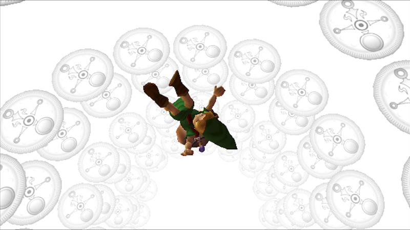

START (again)
An introduction to Recursions blog
Header image: Michael Ostendorfer, Astronomicum Caesareum (1540)
Hosted on GitHub, this blog is a repository of sorts for a research project on The Legend of Zelda: Majora’s Mask, a videogame released for the Nintendo 64 console in 2000. With its focus on a single videogame, it is in part an attempt to follow Astrid Ensslin’s call for game scholarship to move beyond the defining terms towards the analysis of specific artefacts.1 Here, Majora isn’t an example of the broader form. I’m not as interested in how videogames work as I am in how this game works. However, if indicative of anything broader, this project will hopefully go on to demonstrate what Rebekah Cunningham describes as the "dynamic" and "reciprocal" characteristics of digital texts: the way online communities can lend a decades-old game an ongoing existence, one that breaks free of its initial significance.2
I decided to (at least) start this project in a blog, rather than an academic article or book, after reading Fisher’s description of blogging as
a way of getting into writing after the traumatic experience of doing a PhD. PhD work bullies one into the idea that you can’t say anything about a subject until you’ve read every possible authority on it. But blogging seemed a more informal space, without that kind of pressure.3
In this same spirit of informality, this blog offers a series of small, looping trips through its text, rather than a coherent analysis. Taking advantage of the opportunity to experiment and make mistakes, each post will explore a different aspect of Majora and see how new observations might fold back into an incoherent whole.
Recursion is a method of producing a solution to a large, complex problem by breaking it down into small, simple processes. These smaller processes then repeat, enacting small gains until they produce the larger solution, at which point the solution is given. In computer science, this entails a function that calls itself until some “base condition” is met. For example:
int getHundred (int number) {
if (number == 100)
return number;
else if (number < 100)
getHundred (number + 1);
else
getHundred (number - 1);
}
The above function, “getHundred”, receives an integer (“number”) as its input. It then checks if this integer has the value of 100. If it has a value of less than 100, it calls itself, inputting an integer with a value one higher than the original input. If the input is neither equal to nor less than 100—i.e. it's greater than 100—it calls itself with one value lower. In any case, the function will therefore call itself recursively until it recieves a value of 100. Once this base condition is met, the function terminates. A useless function, but a recursive one, nonetheless.
In On the Existence of Digital Objects, Yuk Hui argues that Recursion reaches deep into the question of time”
.4 This is because “a recursive function only comes to a halt when a certain terminal state is reached, while within the process, what is the past is always ahead, because each function is expecting something to come, something that will bring the procedure to a close”
.
Majora
is a videogame that explores a similar model of time. While journeying in the woods in search of a long-lost friend, a boy is attacked by a mask-wearing imp.5 The imp, named the "Skull Kid", steals the boy's precious musical instrument, an ocarina, before transforming him into a lowly creature. The boy is found in this state by a travelling salesman, who offers to return him to normal on the condition that he retrieve his musical instrument, along with a powerful, ancient mask that the Skull Kid stole.
The boy finds himself in Clock Town in a land called Termina. The town is all but empty and in disarray, its “Festival of Time” threatened by the fact that the moon appears to be falling from the sky. After three days, just before the moon hits the land, the boy finds and confronts the imp, managing to retrieve his ocarina. Holding it, he remembers a “Song of Time” that an old friend of his had taught him. Playing this song, he finds himself falling through time, returning to the day he arrived in Clock Town.
The boy returns to the salesman who managed to return him to his prior state by trapping the creature’s restless spirit in a mask. However, the salesman demands that he go back out and retrieve the ancient mask from the Skull Kid as promised, since it contains the evil spirit that is pulling the down moon. To do this, the boy must travel throughout Termina to find and enlist the help of four “guardians” who can prevent the moon’s course.
From this point on, Majora becomes an enactment of recursion. The task at hand—assembling the guardians and retrieving the titular “Majora’s Mask”—is unmanageable in the seventy-two “hours” left before the apocalypse. The player must therefore break the main task down into smaller pieces, making minor progress then repeating the same three days until finally the base condition is met, at which point the game ends. The player moves with an eye to the past: acquiring new items that can create new paths out of prior events.
In his recent work, Recursivity and Contingency, Yuk Hui elaborates a theory of recursion beyond its technical existence. Here, “recursivity” names a broader “organic mechanism” of “being in becoming”, where the terminal state is not defined by a base condition but instead is “immanent” to the repetition.6 A recursive loop encounters the unexpected—a “contingency”—and incorporates this into its function, taking itself towards an unknown terminal point. Its repetitions therefore have a direction, yet one not defined at the outset as a “base condition”.
On this blog, I will move back and forth between technical and organic definitions of recursivity, starting with my own recursive encounters with Majora as a commodity, as intellectual property. First of all, the game is itself something of a recursion: the game recycles the engine of its best-selling prequel, The Lengend of Zelda: Ocarina of Time (1998), placing its "assets"—e.g. character models, animations, textures, etc.—into new combinations and situations.
In 2000, I was an eight years old and a Zelda obsessive. However initial £50 price tag—and further £25 necessary for the required “Expansion Pak”—therefore barred me from playing Majora until I picked up a second-hand copy some years later. In the meantime, I read and re-read an entire walkthrough published across four issues of Nintendo Official Magazine in 2001.7 Once I did play the game itself, the uncanny effect of its recycling Ocarina's engine and assets was therefore amplified by my ersatz knowledge of its narrative and puzzles derived from text and image. Due to the deterioration of my N64 and my impatience with the game’s unforgiving save system, I would only complete Majora some further years later on another permeation, The Legend of Zelda: Collector’s Edition (2003), which emulated several older Zelda titles on the Nintendo GameCube.
The dark and surreal tone of Majora has provoked numerous fan theories over the past two decades. I came across one such theory by way of the now-defunct web-ranking browser extension ‘StumbleUpon’ as I approached the end of my secondary education, aged sixteen. This theory was initially posted to the Zelda Legends forums in 2006 by Dan Merrill, under the username Hylian Dan.8 Merill would enact his own recursion, further developing the post on the Zelda Universe fan site two months later and revisiting it again in 2011.
Merrill’s readings of Majora are detailed and provocative, weaving together a complex subtext of blasphemy out of suggestive yet easily ignored models and textures in the game’s Stone Tower area. As he noted in his 2011 post, readers were sceptical of his claims—particularly the idea that the notoriously family-friendly Nintendo would purposefully include phallic imagery in one of their games. Nevertheless, his careful attention paid to the minutiae of a game I had found frustrating and compelling in equal parts upended my entire understanding of how I might approach cultural texts.
Replaying Majora in the light of Merrill’s readings, I discovered that certain terms I had never fully understood in my English classes— theme, symbol, context, form—gained sudden clarity. I developed a newfound obsession for textual analysis and opted to specialise in English Literature for my final years of secondary education before pursuing an undergraduate degree in the same subject. Nine years and one doctorate in English Literature later, I am returning to Majora once again to try and make sense of the game that laid the foundations for my past decade.
Various overreaches or omittances become apparent when returning to individual fan theories about Majora in the light of my humanities training. Furthermore, as a collection these theories rarely address one together dialectically to piece together a cumulative understanding. However, rather than dismissing fan analyses on the grounds of authority—for not ‘amateur’, or not ‘peer reviewed’—my approach will be to work with them, identifying and crediting their strongest arguments. I will also seek to fold in analysis deriving from the ongoing engagement by hackers, decompilers, speedrunners and alternate-reality gamers. These “metagaming” communities bend and reconfigure Majora to establish new parameters of play, introducing contingencies that recursively lead the game outside of its initial boundaries.
I have been thinking of this project in the terms offered by Bruno Latour’s “Actor-Network Theory”, although I am not entirely wedded to his approach.9 No “actor” in the “network” we might refer to as Majora’s Mask envelops all the others. The intentions of developers are not gospel, but nor can they be dismissed. The narrative holds no “true meaning” to uncover but can instead be placed in relationships with other texts that produce surprising new meanings. We can “open the hood” and consider the game’s source code, but only to find another actor, not a “deeper” or “truer” embodiment of the game.
In short, this project does not offer a “comprehensive theory” of Majora, as others have. Nor does it offer a “deep dive”. Instead, it attempts something of a long, shallow and meandering swim; or, following Yuk Hui, a recursive movement, one whose final cause is imminent, and whose encounters with contingencies lead the whole in some undefined yet definite direction.